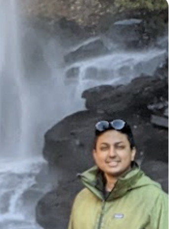

|
Pavan Ravishankar
Email /
Google Scholar /
Twitter /
LinkedIn
About: I am a Computer Science PhD student at the Courant Institute of Mathematical Sciences, NYU, a member of ML4G lab. My PhD is funded by MacCracken fellowship. I am fortunate to have been advised by Prof. Daniel Neill, Prof. Balaraman Ravindran and Prof. Sudarsan Padmanabhan. My work is refined through dialogue, and finds expression in scientific writing and code as practices of rigor, critique, and shared understanding--in no particular order.
Research Interests: I am interested in fundamental and applied questions in:
- Model Stability: Data evaluation, robust optimization, and signal detection
- Model Multiplicity: Optimize for fairness-accuracy trade-off that goes beyond zero-sum thinking.
- Algorithmic Fairness: Design equitable algorithms for human aid
Lenses: Machine learning, Representation learning, and Algorithm design
Academic Service:
- PC Member: EAAMO 2026
- Reviewer: EAAMO 2026, MURE AAAI Workshop 2026, EAAMO 2025, CODS COMAD 2024, DAI Workshop AAAI 2023
- Organizer: DEAADIGS Workshop ACM Web Science Conference, 2021
Honor Society Membership: Sigma Xi
Non-Profit Experience: Prison Mathematics Project
Connect: I am looking for a Research Scientist or Postdoctoral position starting in Fall 2026. If you're interested in working with me, please don't hesitate to reach out!!
Publications:
- Learning Representational Disparities
Pavan Ravishankar*, Rushabh Shah, Daniel B Neill
Preprint [Paper]
- Be Intentional About Fairness!: Fairness, Size, and Multiplicity in the Rashomon Set
Gordon Dai*, Pavan Ravishankar*, Rachel Yuan, Emily Black, Daniel B Neill
EAAMO 2025 [Paper] [Best Paper Honorable Mention]
- Provable Detection of Propagating Sampling Bias in Prediction Models
Pavan Ravishankar*, Qingyu Mo, Edward McFowland III, Daniel B Neill
AAAI 2023 [Paper]
- Financial Exclusion of Internal Migrant Workers of India during COVID-19: Can Digital Financial Inclusion be facilitated by AI?
Pavan Ravishankar*, Sudarsan Padmanabhan, Balaraman Ravindran
JITCAR 2023 [Paper]
- A Causal Approach for Unfair Edge Prioritization and Discrimination Removal
Pavan Ravishankar*, Pranshu Malviya*, Balaraman Ravindran
ACML 2021 [Paper]
- A Causal Linear Model to Quantify Edge Flow and Edge Unfairness for UnfairEdge Prioritization and Discrimination Removal
Pavan Ravishankar*, Pranshu Malviya*, Balaraman Ravindran
ICML Workshop 2020 [Paper]
|

|